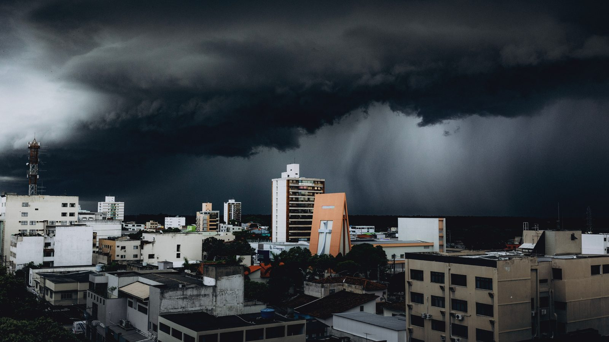

Itapema · Clima
Itapema · ClimaDefesa Civil de Itapema alerta para chuva forte no fim de semana, com risco de temporal
O alerta municipal que abriu este fim de semana de chuva.
A Defesa Civil do estado manteve o aviso hidrometeorológico para todas as regiões até a madrugada de terça-feira. A segunda-feira é o pior dia, com risco alto a muito alto de alagamento, enxurrada e deslizamento.
Em 30 segundos · Modo de Leitura, formato original Santa Informa
A Defesa Civil de Santa Catarina manteve o aviso de temporal até a madrugada de terça-feira, 1º de setembro.
No domingo há condição de tempestade severa o dia todo, com raio, granizo e rajada de vento.
A segunda-feira é o dia mais pesado: risco alto a muito alto de alagamento, enxurrada e deslizamento em todas as regiões.
No litoral a previsão é de 100 a 150 milímetros no acumulado.
No Planalto Sul, no Oeste e no Meio-Oeste pode chegar a 250 milímetros.
Na terça a frente se afasta e sobra temporal isolado no Vale do Itajaí e no Litoral Norte.
Na quarta e na quinta entra ar seco e frio, com sol e chance de geada na Serra.
Quem mora perto de encosta precisa olhar trinca no terreno e poste inclinado.
Rua alagada não se atravessa, nem a pé nem de carro.
Ocorrência é pelo 199, da Defesa Civil, ou pelo 193, dos Bombeiros.
Santa CatarinaPublicada em Redação Santa Informa

O tempo não melhora antes de terça-feira. A Defesa Civil de Santa Catarina manteve o aviso hidrometeorológico para todo o estado, com validade até a madrugada de 1º de setembro. A causa é uma frente fria semiestacionária, parada entre o norte do Rio Grande do Sul e o centro de Santa Catarina, que segura a instabilidade em cima da gente e não deixa a chuva passar.
Neste domingo há condição de tempestade severa desde a madrugada, com raio, granizo e rajada de vento intensa, e a chuva aumenta entre a tarde e a noite. O risco é alto, e em alguns pontos muito alto, para destelhamento, dano na rede elétrica, queda de galho e de árvore e alagamento. Na segunda-feira a frente se posiciona sobre o estado e aprofunda uma área de baixa pressão. É o dia mais pesado de todo o aviso, com risco alto a muito alto de alagamento, enxurrada e deslizamento em todas as regiões. Na terça a frente começa a se afastar, e ficam temporais isolados no Meio-Oeste, na Grande Florianópolis, no Vale do Itajaí e no Litoral Norte até a tarde.
O boletim divide o estado por faixa de volume acumulado até 1º de setembro. Planalto Sul, Oeste e Meio-Oeste ficam com a maior fatia, de 200 a 250 milímetros. Extremo-Oeste, Alto Vale do Itajaí e Grande Florianópolis aparecem com 150 a 200 milímetros. As demais regiões, e é aí que entra o litoral de Itapema e da Costa Esmeralda, ficam entre 100 e 150 milímetros. É o mesmo intervalo que a Defesa Civil de Itapema já tinha anunciado na quinta-feira, quando o Santa Informa publicou o alerta para o fim de semana.
A orientação da Defesa Civil é olhar a encosta com atenção, procurando trinca no terreno, poste ou muro inclinado e água descendo onde antes não descia. Durante o temporal, procurar abrigo seguro. E não atravessar rua alagada, ponte ou pontilhão submerso, nem de carro nem a pé. Ocorrência é pelo 199 ou pelo 193. Passado o susto, vem o alívio: na quarta e na quinta uma massa de ar seco e frio toma conta do estado, o sol volta e a temperatura cai à noite, com possibilidade de geada na Serra. Na terça a mínima serrana chega perto dos 3 graus. No litoral, o domingo fica entre 16 e 24 graus, e as máximas de segunda caem para a faixa de 13 a 22 graus, conforme a região.
O resumo de 30 segundos está no topo e a versão completa é o texto acima. Aqui ficam as três leituras da casa sobre o mesmo assunto.
Clara, a otimista
Tem um lado bom nessa chuva toda. Cem milímetros em poucos dias enchem reservatório e recuperam o lençol bem antes da temporada, e no litoral a gente sabe muito bem o que é chegar em janeiro com a caixa d'água raspando.
E reparei numa coisa que passa batido: o aviso saiu com dias de antecedência, com volume separado por região e risco separado por dia. Isso é aparelho medindo e gente competente lendo o aparelho. A mesma frente fria, algumas décadas atrás, chegaria de surpresa em cima do telhado.
Seu Prudêncio, o criterioso
Merece atenção o acumulado, e não a chuva de um dia só. Deslizamento quase nunca acontece no primeiro temporal. Acontece no terceiro, quando o terreno já bebeu água até não aguentar mais. É por isso que a terça-feira continua dentro do aviso mesmo com a frente fria já indo embora.
Vale acompanhar também o que a faixa de 100 a 150 milímetros esconde. É média de região, e região grande. Rua de fundo de vale e bairro de encosta recebem a mesma chuva com efeito bem diferente. Uma sugestão útil: quem tem bueiro na frente de casa faz um favor ao quarteirão inteiro tirando a folha e a sacola do ralo ainda hoje, antes que a segunda-feira chegue.
E é justo dizer que o aviso está bem feito. Volume por região, risco dia a dia, orientação prática e dois telefones no fim do texto. Boletim que o cidadão comum consegue ler e usar para se proteger é boletim que cumpre a função.
Caco, o sarcástico
Frente fria semiestacionária. Traduzindo do meteorologês para o português: a chuva chegou aqui, gostou do lugar e resolveu ficar.
O aviso pede para não atravessar rua alagada de carro. Todo ano a Defesa Civil escreve essa frase e todo ano aparece alguém filmando o próprio carro boiando. Já virou clássico da estação, junto com a lona no telhado.
E o prêmio por sobreviver ao temporal é geada na Serra na quinta-feira. Santa Catarina deve ser o único lugar do mundo onde a boa notícia depois da tempestade é passar frio.
Fontes: Defesa Civil de Santa Catarina, boletim "Previsão para os próximos 5 dias" publicado em 30 de agosto de 2026, de onde saem o dia a dia de domingo a quinta-feira, os riscos de cada dia, as faixas de temperatura e a previsão de geada na Serra. O aviso Atualização, Atenção Hidrometeorológica SDC/SC 29/08 11h50, do mesmo órgão, traz a validade até a madrugada de 1º de setembro, os volumes de chuva por região, os fenômenos previstos e as orientações à população, inclusive os telefones 199 e 193. O intervalo de 100 a 150 milímetros já anunciado para Itapema sai da nossa matéria anterior, linkada no texto. A imagem do topo é ilustrativa, de banco gratuito, e não registra o temporal desta semana.
Itapema · ClimaO alerta municipal que abriu este fim de semana de chuva.
 Santa Catarina · Clima
Santa Catarina · ClimaA frente fria anterior, que já tinha bagunçado o calendário.
 Santa Catarina · Clima
Santa Catarina · ClimaOutro aviso de granizo, para comparar o tamanho deste.